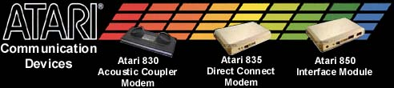

The Atari 850 Interface
The Atari 850 interface was probably the single most useful peripheral
Atari ever created for its computer systems. Designed
by Scott Scheiman, the Atari 850 gave the original Atari 400/800 and the
last XL and XE systems their "Eyes & Ears" so to speak.
The Atari 850 interface provided 4 separate RS-232-C serials ports addressed
as devices R1: to R4: and a single Centronics compatible printer port.
This allowed the Atari computers to use industry standard modems, terminal,
teletypes and printers. The serial interface ports were
female DB-9 connections (the same as on the original Macintosh 128,512
and Plus) as opposed to the standard IBM male DB-9 serial port connectors
which the entire PC industry adopted and is still in use to this day.
The Centronics printer port is a non-standard DB-15 female connector which
only Atari used. Almost all other computer systems adopted
the PC standard female DB-25 connector.
Scott Scheiman recalls:
"Atari was preparing to show the new 850 Interface at the CES (Consumer
Electronics Show) and everyone realized we had nothing written to demonstrate
the 850 capabilites. So in 4 days I wrote a terminal
program that would later become Telelink 1 and would be packaged with the
850 Interface. "
Atari
850 Technical Data
Atari
850 Driver Modification Listing
Source
Code to 850 Firmware
While the Atari 850
was the only interface Atari ever sold to the public, many other devices
and variations of the Atari 850 were made or used the Atari 850 interface
case to house other various products. Even Atari's own service
division used the Atari 850 cases to house its various (SALT) Stand
ALone
Test
units. Other outside companies and parties used the Atari
850 cases for many odd and unusual projects, click below to see these various
850's.
THE
UNUSUAL 850 INTERFACE COLLECTION